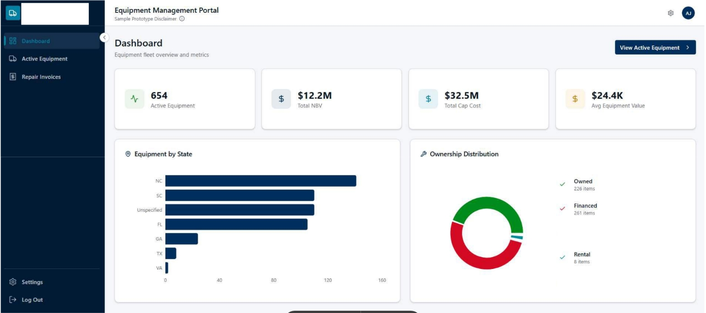
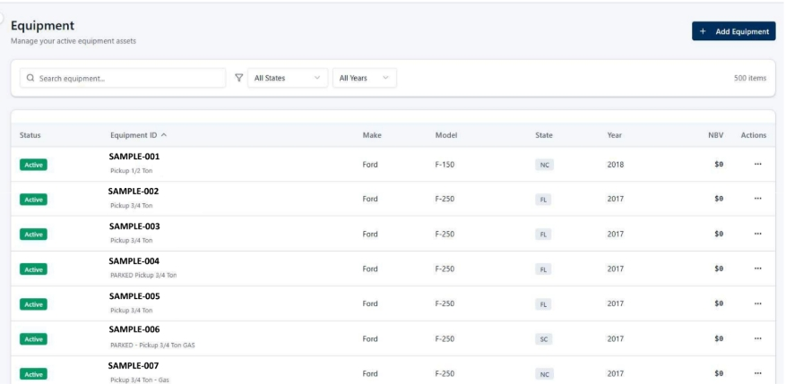
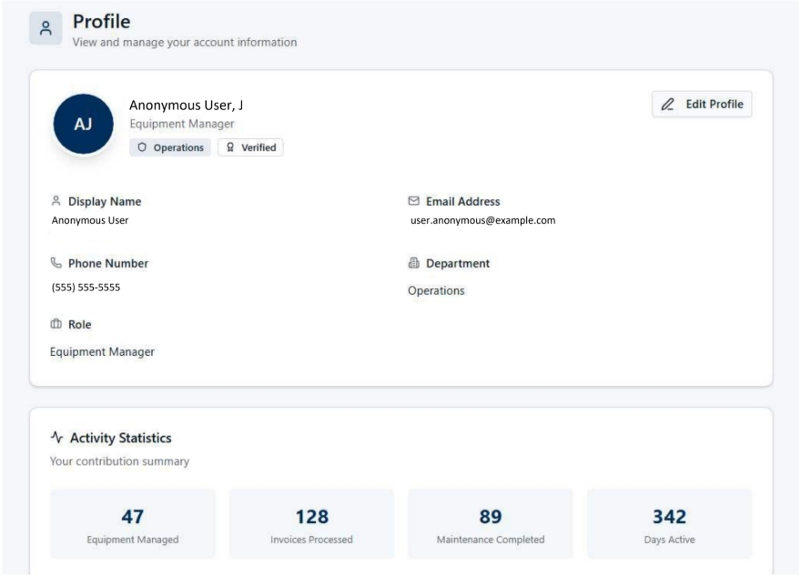
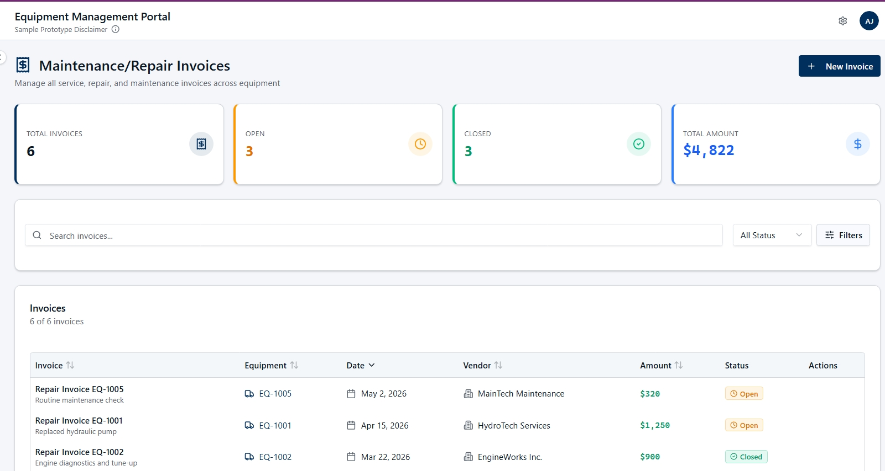
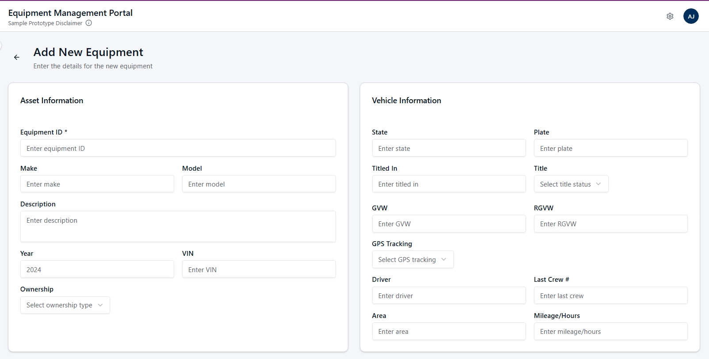
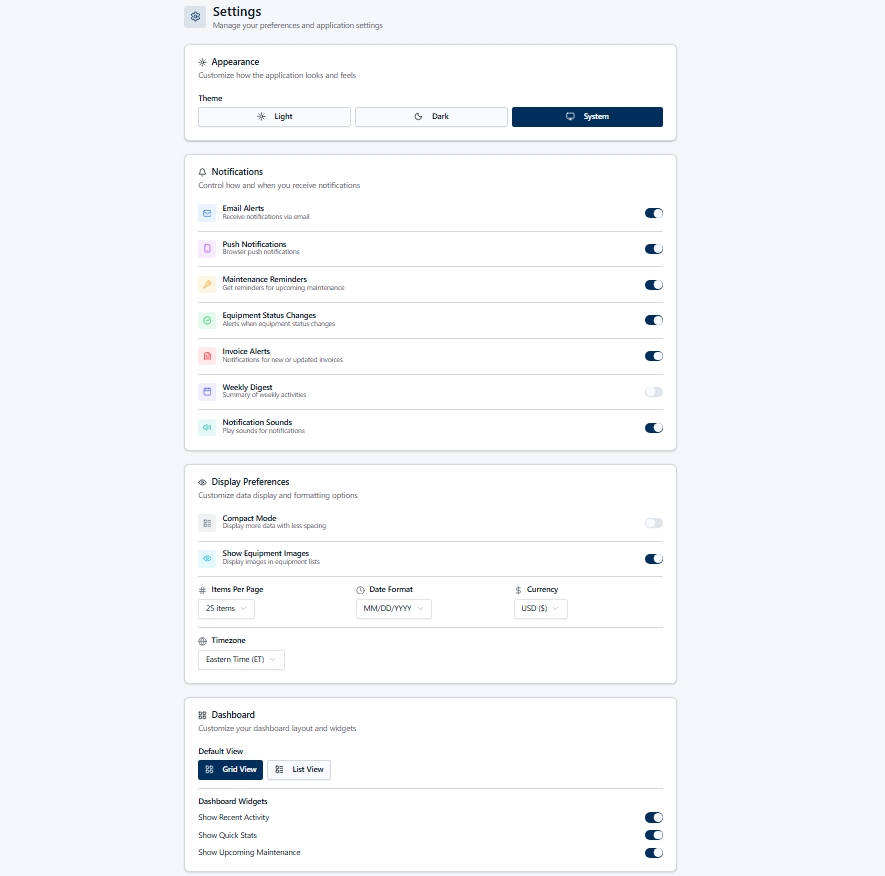

{kind=link}
Fragmented tracking
Equipment records stored across disconnected spreadsheets limit visibility, ownership, financial review, and lifecycle control.
A model-driven asset tracking concept designed to centralize equipment records, lifecycle status, maintenance history, invoice visibility, and operational ownership.

Equipment records stored across disconnected spreadsheets limit visibility, ownership, financial review, and lifecycle control.
Equipment, invoices, status, maintenance, and profile information are organized into a controlled operational data model.
Designed around equipment profiles, lifecycle state, invoice records, regional ownership, and controlled reference data.
Supports better asset oversight, maintenance planning, financial visibility, and data governance across regions.
EMP is structured around controlled entities and relationships so equipment records can support operations, financial review, maintenance tracking, and lifecycle decisions.
| Rule | Purpose |
|---|---|
| Required asset identity | Prevents incomplete or duplicate equipment profile records. |
| Lifecycle status control | Provides consistent operational meaning for active, inactive, retired, or maintenance states. |
| Regional assignment | Supports ownership, responsibility, and operational segmentation. |
| Invoice relationship | Links cost records to the correct equipment profile for financial analysis. |
| Controlled data entry | Reduces free-text variation and improves reporting reliability. |
Each screenshot represents a different layer of the operating model: dashboard visibility, record management, invoice tracking, and controlled data capture.






High-level architecture for asset tracking, lifecycle management, and reporting use cases.
Data model documentation for core equipment records, attributes, and operational fields.
Governance considerations for data quality, record ownership, controlled entry, and maintainability.